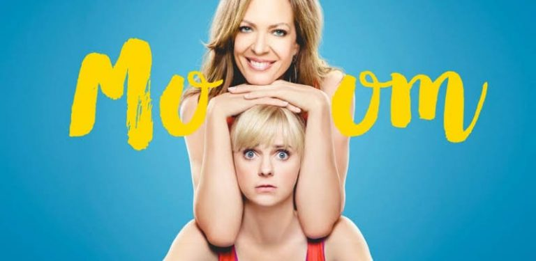

The popular program of CBS, titled ‘Mom’, will be returning soon on the television with its eighth season that had already been renewed along with the seventh one on February 5, 2019. Over the last few years, the show has received outstanding ratings, which can be witnessed in the confidence of the network to have renewed two seasons at once.
The show has been executive produced by Nick Bakay, Chuck Lorre, Gemma Baker, and Eddie Gorodetsky, working under the production house of Warner Bros. Television Distribution and Chuck Lorre Productions, with the former one responsible for the distribution rights of the series. Follow this article if you want to get acknowledged to more stuff related to the eighth season of the show, including the date of premiere, cast, trailer, and plot.
Mom Season 8 Release Date
The release date of the eighth season of the American television series, Mom, was earlier estimated to be sometime in September 2020. However, the global pandemic may push the production of season 8 by a few months, the symptoms of which have already been witnessed in the seventh season, which started airing from September 26, 2019. We all know that the production of Mom season 7 has been stopped after the release of episode 20 that aired on the television on April 16, 2020, making it the de-facto season finale of the year 2019-2020. The first season of the series premiered on September 23, 2013, on CBS. All the seasons of the show generally consist of 22 episodes, except the seventh one, which is currently on hold.

You can watch the past episodes of the show online on Hooq, Hulu, and Amazon Prime. You can stream the show at unofficial platforms as well, but in that case, the creators of the series would be at a loss.
Mom Season 8 Storyline
Created by Chuck Lorre, Gemma Baker, and Eddie Gorodetsky, ‘Mom’ is a sitcom television show that centers the story of a single mother, Christy, who struggles to carry on the upbringing of the two of her children, after leading a life full of drug and alcohol abuses. She shifts to Napa Valley, California, where she gets employed as a waitress. The show showcases a variety of social issues, including homosexuality, addiction, bisexuality, alcoholism, single parenting, early pregnancy, criminal justice, disability, and several other family dynamics. The series displays verbal comedy and inspires us to stay stiff irrespective of the situation and to help out women in similar circumstances.
The official storyline for this season is not yet known. Once new information drops, you know very well where to check out.